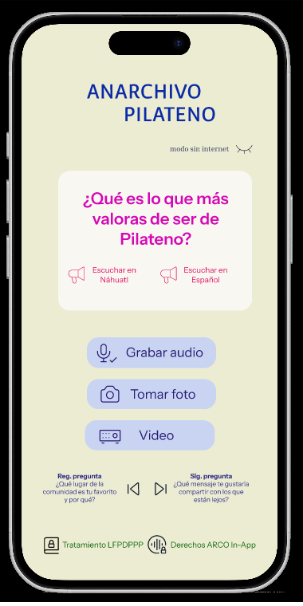
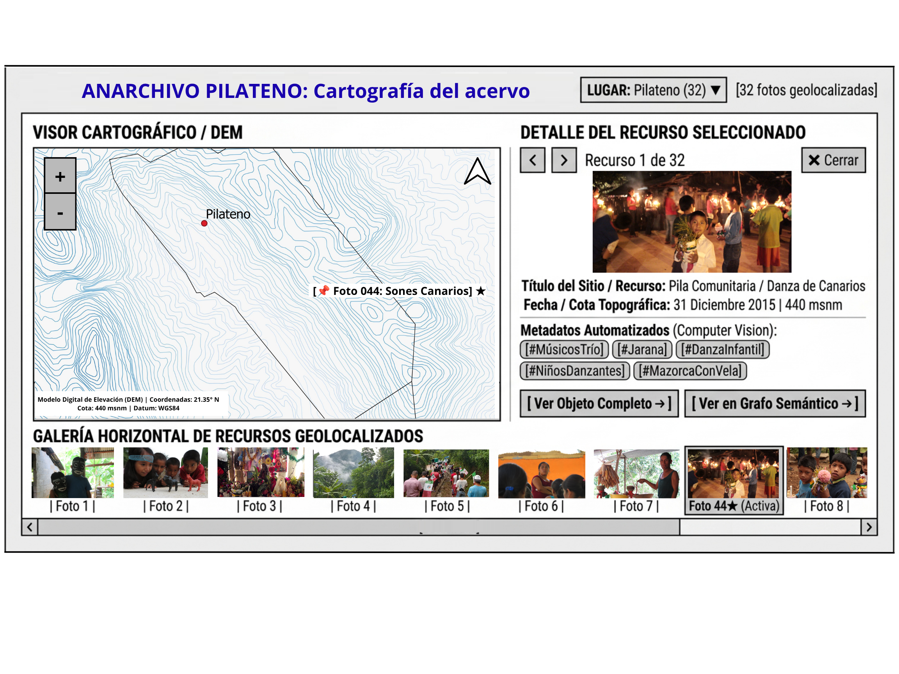
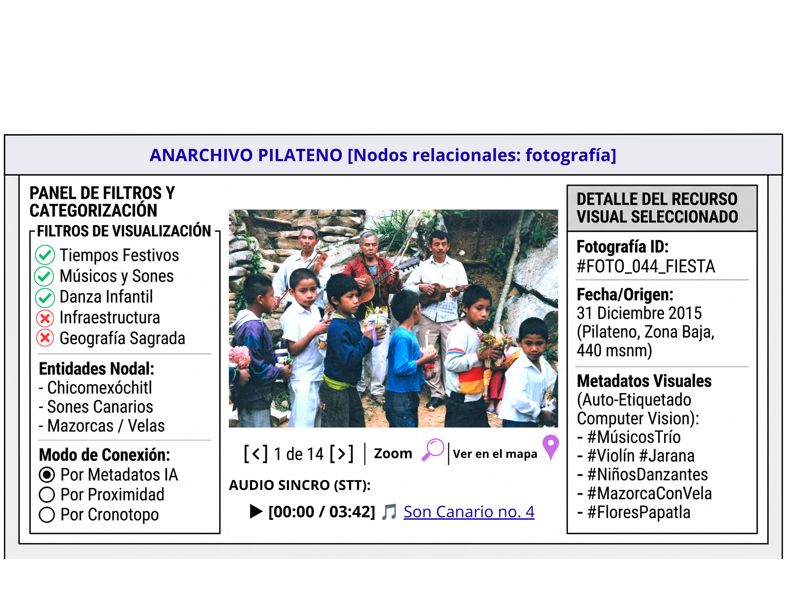
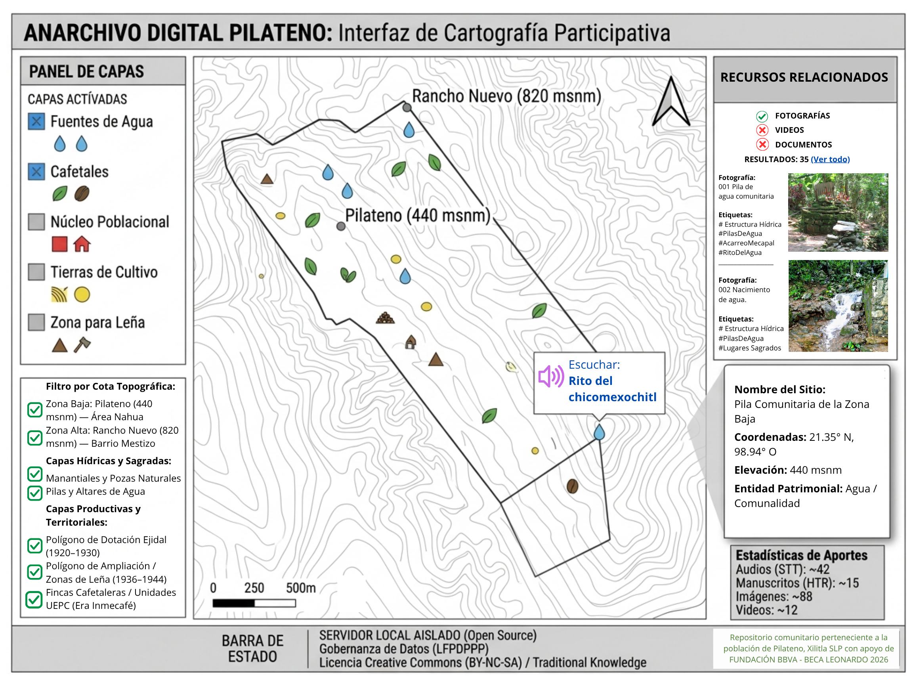
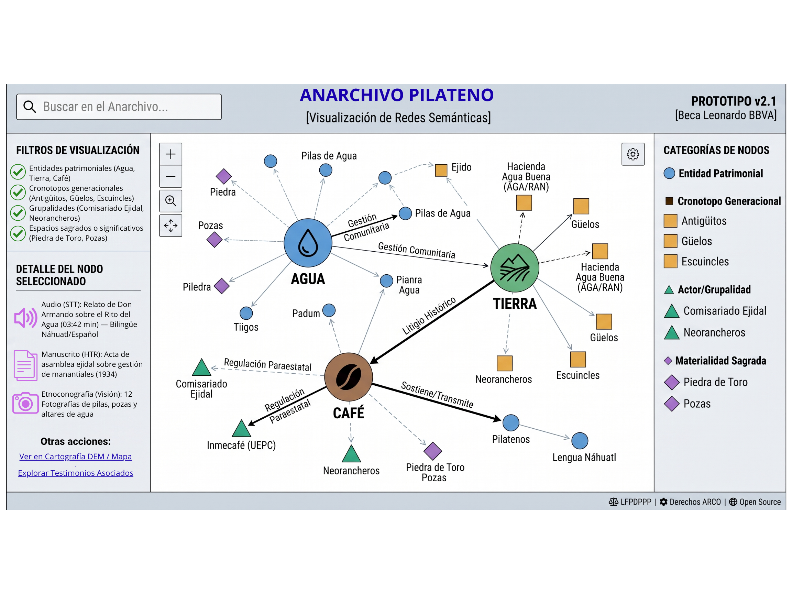

El Anarchivo Digital Participativo es una infraestructura de código abierto (Open Source) basada en una aplicación móvil PWA de baja fricción y motores locales de Inteligencia Artificial (STT, HTR y Visión por Computadora).
Desarrollado como piloto para el ejido de Pilateno (Xilitla, S.L.P.), el proyecto combina el uso de IA de frontera operando en segundo plano dentro de servidores privados aislados (No-Leakage). Esta arquitectura garantiza la soberanía tecnológica comunitaria, el cumplimiento de protección de datos (LFPDPPP) y el ejercicio de derechos ARCO sin barreras de alfabetización.
Esta interfaz materializa la metodología de captura descentralizada al sustituir los complejos formularios de metadatos por activadores narrativos afectivos de un solo clic. Su diseño offline-first está optimizado para la brecha digital rural, guiando a los usuarios mediante tarjetas de voz bilingües (náhuatl y español) que incentivan el registro espontáneo de su memoria viva.
Desde una perspectiva ética, la aplicación resuelve la fricción jurídica al integrar avisos de privacidad sonoros y mecanismos de derechos ARCO (Acceso, Rectificación, Cancelación u Oposición) directamente en la plataforma (In-App). Esto garantiza un consentimiento libre e informado sin imponer barreras de alfabetización, devolviendo el control de los datos sensibles a los propios habitantes.

Esta visualización rompe con la estática de los archivos institucionales tradicionales al anclar los testimonios, fotografías y documentos directamente en el territorio donde cobran sentido. Permite a la comunidad y a los investigadores navegar espacialmente por los recursos multimedia procesados por visión computacional, vinculando la memoria con coordenadas geográficas específicas.
Al situar el acervo etnográfico sobre el paisaje histórico, la plataforma restituye la gobernanza comunitaria sobre el patrimonio material e inmaterial. La geolocalización funciona aquí como un dispositivo político que valida las ontologías locales frente a las clasificaciones ajenas de los repositorios estatales.

Esta pantalla evidencia la potencia del procesamiento multimodal en segundo plano, donde motores de Inteligencia Artificial de código abierto (Computer Vision, Whisper para STT y HTR) extraen transcripciones y etiquetas visuales automáticamente. Esto elimina la necesidad de ingesta manual de metadatos, superando las limitaciones de plataformas convencionales como Omeka o Mukurtu.
El valor crítico de esta arquitectura radica en la soberanía tecnológica: los datos biométricos sensibles de voz y rostro son procesados en servidores privados aislados bajo una política de No-Leakage. Esto garantiza que el patrimonio de Pilateno no sea transferido ni explotado por APIs comerciales para el entrenamiento de modelos de terceros.

La proyección de capas hidrográficas, productivas y patrimoniales sobre Modelos Digitales de Elevación (DEM) traduce la geografía sagrada y los conflictos territoriales en una herramienta visual de autogestión. Integrar elementos como pilas de agua, cafetales y zonas ejidales permite leer históricamente las tensiones socioambientales de Xilitla en un formato interactivo.
Esta visualización consolida el concepto del anarchivo como un espacio vivo. En lugar de un mapa estático dictado por el Estado, la comunidad cuenta con una topografía maleable donde los habitantes delimitan y defienden activamente las materialidades que conforman su identidad.

El grafo interactivo ilustra las conexiones orgánicas entre entidades patrimoniales fundamentales (Agua, Tierra, Café), los cronotopos generacionales (como los güelos) y las autoridades comunitarias. Esta red flexible evidencia cómo la plataforma no impone categorías rígidas, sino que parte de nodos base que se reordenan según la ingesta de la población.
Representa la culminación metodológica del proyecto: una infraestructura descentralizada que cede la autoridad científica a los pobladores. El grafo visibiliza la complejidad de las relaciones sociales y territoriales en Pilateno, permitiendo a los evaluadores comprender la escalabilidad y profundidad analítica de la propuesta.
